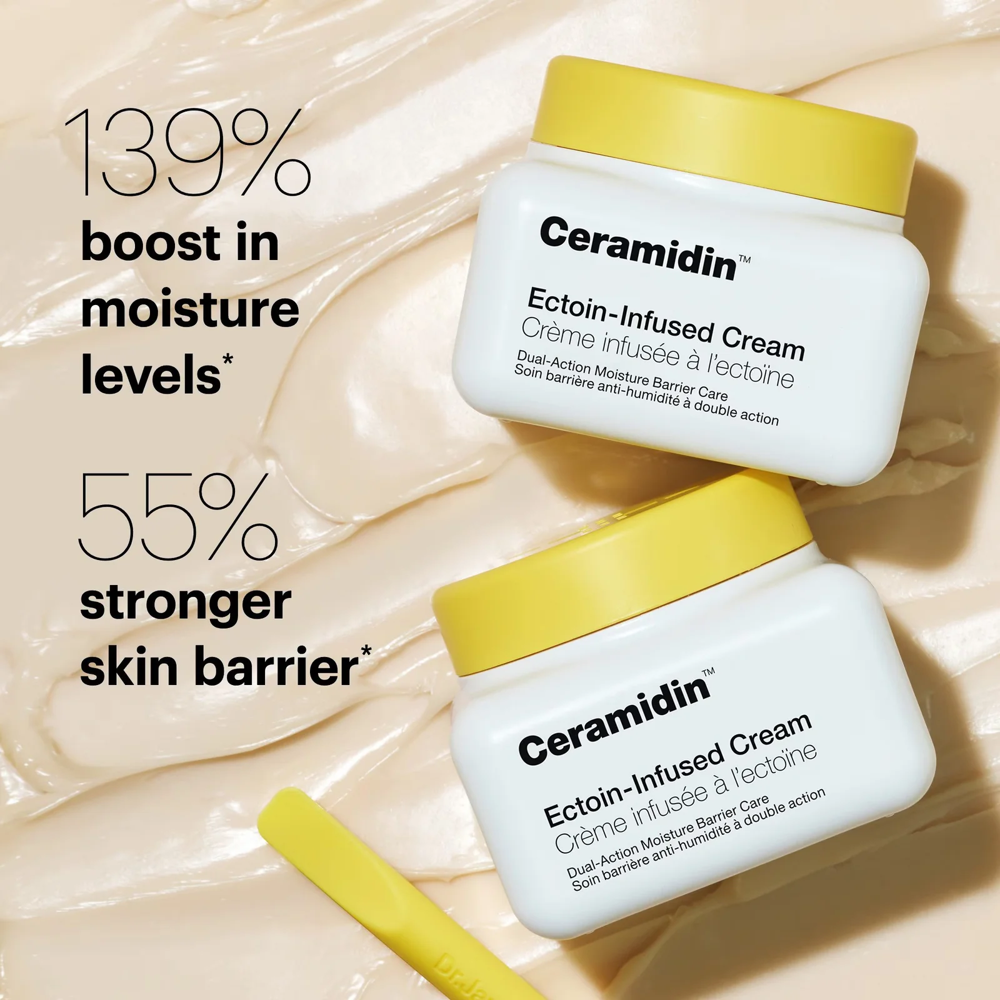

450.000đ
Thương hiệu: Dr.Jart+ (Hàn Quốc)
Loại da phù hợp: Da khô, da nhạy cảm, da đang tổn thương.
Kem dưỡng Dr.Jart+ Ceramidin Cream là sản phẩm dưỡng ẩm chuyên sâu. Sản phẩm được thiết kế nhằm phục hồi và củng cố hàng rào bảo vệ da, đặc biệt phù hợp với làn da khô, da nhạy cảm hoặc da đang bị tổn thương do môi trường.
Nhờ chứa phức hợp Ceramide cùng các thành phần dưỡng ẩm cao, kem giúp khóa ẩm hiệu quả, hạn chế tình trạng mất nước qua da và cải thiện tình trạng khô rát, bong tróc. Kết cấu kem mềm mịn, thẩm thấu tốt và mang lại cảm giác mềm mại, dễ chịu.